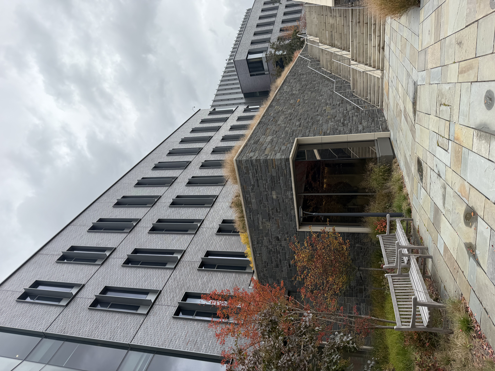

Briger Hall's Green Roofs
Our feature is the green roof of Briger Hall above the Environmental Studies (ES), the School of Engineering and Applied Science (SEAS), and the Commons from Ivy Lane. This roof catches rain to manage stormwater and cool urban areas. The environmental question we are exploring asks: Comparing asphalt, cool, and green roofs: how might each affect heat, stormwater runoff, energy use, and resources needed for each option?
Find it
Where to find it: View it above the Environmental Studies (ES), the School of Engineering and Applied Science (SEAS), and the Commons from Ivy Lane

Look closely: Notice the green/brown dry plants that sit on top of the roof, planted closely next to each other.
Why is it interesting?
Our observation: Many places around campus, especially near Briger Hall are surrounded by impermeable surfaces such as roadways and other buildings, which makes the inclusion of green roofs a super important feature for water management on campus. The beds of vegetation are placed right near the stairs, allowing for the water to be brought to the plants so that they can fulfill their purpose.
Green roofs are very useful for managing stormwater, especially in places with mostly impermeable surrounding surfaces. This is because the plants will absorb a lot of the stormwater runnoff which would otherwise have no where to go. Further, it is interesting that the choice was both for environmental reasons, and aesthetic ones. Because the building houses the environmental science department, building planners aimed to integrate the environment into many aspects of the visual design. This is interesting because it proves that choices made to help the environment can also be used to make buildings look nicer which may encourage more planners to include it. [1] [2]
What if / What might change?
Hypothetical alternative
One plausible alternative to the green roofs is using a traditional roofing method like asphalt shingles.
For the environment: A lot of environmental benefits from the green roofs would be lost with this method. To explain, there would be less stormwater being absorbed by the plants which could contribute to flooding in the surrounding areas when there is very heavy rain, especially because Princeton has many places that are dominated by impervious surfaces. Further, with the black asphalt roofs, we would not be helping mitigate the Urban Heat Island Effect. Black rooftops are some of the hottest things in urban areas which could cause issues in New Jersey, considering the effect is running rampant in New Jersey, likely because of its dense population. [2]
For people: One human benefit is that there will be a reduced upfront cost to installing the asphalt roofs and there will be less cost going to having to ensure that the plants have proper maintenance like watering. However, there is also an increased cost for these asphalt roofs in that the increased heating means that in the summer months air conditioning will likely have to be higher which has a large climate impact.
What we do not know: One uncertainty is that the climate of New Jersey is often mild compared to other areas. So, we are unsure if the increased cost, both fiscally and environmentally, to using a traditional roof is worth it. Maintaining the green roof also requires money and often extra water which could mean that the net benefit is actually to use the traditional roof. Information about the current amount of water it takes to maintain the plants when it's not rainy and how much money Princeton pays landscapers to do so. Then, we could compare air conditioning requirements from other buildings of similar size and similar system to briger (geothermal heating/cooling). Learning that the increased cost for air conditioning is negligable may signal that the asphalt roof is actually better, especially if the green roof requires a lot of extra water for maintenance.
Another plausible alternative to the green roofs is using the "cool roof" method.
Cool roofs leverage materials science and light colors to increase reflectance off of the roof which results in lowering indoor temperatures. Therefore, this would aleviate the fear of asphalt roofs heating up the indoor space which would increase cooling requirements. Further, it has similar human benefits in that it has a lower maintenance cost than green roofs and does not require excess water to keep the plants alive in drier conditions. However, we still do not know how positive the impact of these specific green roofs are on stormwater. If stormwater is an issue in the area, the green-roofs are likely helping but if not, they may just be requiring excess water for maintenance. [3]
Show how you know
- Green Roofs for Healthy Cities. About Green Roofs. 2025 This source supports information regarding how green roofs work, their benefits separated by private, public, and design.
- Atilier Ten. Briger Hall, Commons and School of Engineering and Applied Science (SEAS) at Princeton University. This source supports information regarding the design specifications of Briger Hall, their benefits, and the reasons they were included.
- National Parks Service. Green Roofs on Historic Buildings: Green Roof Alternatives. This source supports information regarding alternatives to green roofs, including cool roofs and a comparison of their benefits
Listen and look
Read the complete audio transcript
Welcome to Briger Hall. If you’re standing on Ivy Lane, I’d like you to look up. Above the Environmental Studies building, the School of Engineering and Applied Science, and the Commons, you’ll see beds of vegetation growing on the roofs. Notice where they sit. The plants are placed right near the stairs. Why might that be? Take a few seconds to look.
What you’re seeing is a green roof, a layer of soil and plants on top of a building. One of its biggest jobs is managing stormwater. Around Briger Hall, much of the ground is covered by roadways and other buildings, so rain has very few places to soak in. The plants absorb a lot of that water, which would otherwise have nowhere to go. We think the placement near the stairs helps bring water to the plants so they can do their job.
According to Green Roofs for Healthy Cities, green roofs offer benefits for the public, for private owners, and for design. Atelier Ten’s project description for Briger Hall points to environmental goals behind the building’s features. Because the building houses Environmental Studies, planners seem to have wanted the environment built into the look of the place. That’s interesting, because it shows that choices that help the environment can also make a building look better, which might encourage more planners to make them.
Now let’s imagine two alternatives to the green roof. The first is a traditional asphalt roof. The second is a cool roof, which is covered in a light-colored, reflective surface that bounces sunlight away instead of absorbing it. Start with asphalt. For the environment, we’d lose a lot. Less stormwater would be absorbed, which could add to flooding in the surrounding areas during very heavy rain. Dark asphalt also gets extremely hot and would add to the urban heat island effect, which is a concern in dense parts of New Jersey. For people, asphalt costs less to install and needs no watering or plant care. But a hotter roof could mean more air conditioning in the summer, and that has its own climate impact.
Now the cool roof, which is the more serious competitor. It would help with heat. By reflecting sunlight, it could reduce the urban heat island effect and keep the building cooler, so it might need less air conditioning. It would also be low-maintenance, with no plants to water. But a cool roof does nothing for stormwater. Rain would simply run off, and around Briger Hall, there are few places for that water to go. A cool roof also wouldn’t give the building the living, visible connection to the environment that the planners seem to have wanted.
Here’s what we don’t know. New Jersey’s climate is often mild compared to other places, so we’re not sure the extra cooling benefits of either alternative would matter much. Green roofs need upkeep and sometimes extra water, so the net benefit might even favor a cool roof, especially if stormwater is already handled elsewhere on campus. To find out, we’d need to know how much water the plants need when it isn’t raining, and how much Princeton pays for landscaping. We’d also want to compare air conditioning use in similar buildings, especially ones that, like Briger Hall, use geothermal heating and cooling.
So here’s a question to consider as you look up: if a green roof needs extra water and upkeep, what would you want to know before deciding whether it’s better than a cool roof? Thanks for listening, and enjoy exploring Briger Hall.
Consider: If a green roof needs extra water and upkeep, what would you want to know before deciding whether it’s better than a cool roof?